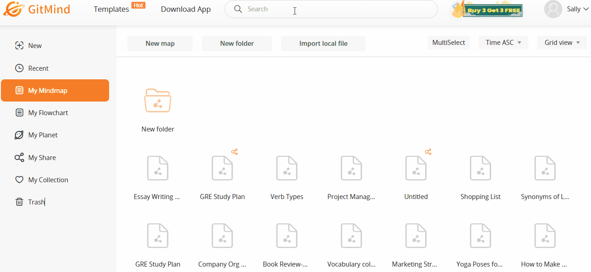
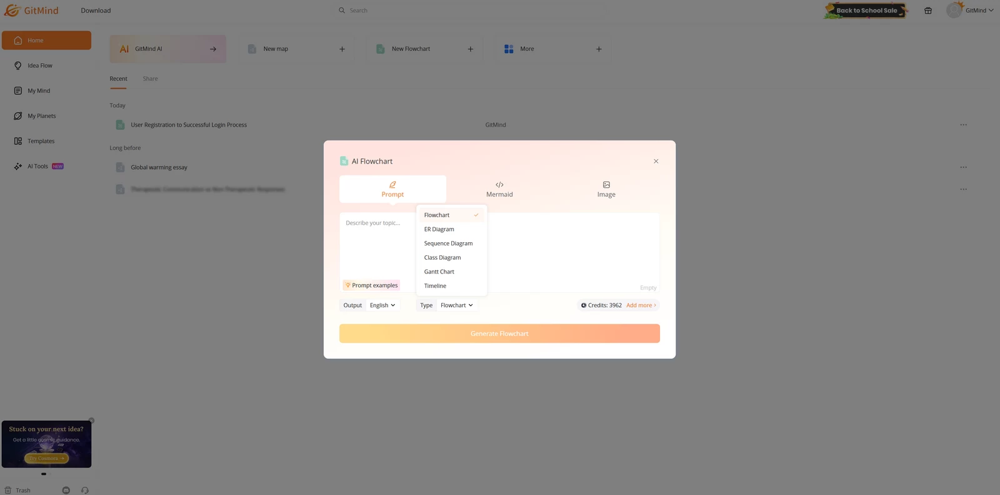

GitMind 版本进化史：从纯手绘导图到 AI 驱动的知识中枢
从迭代轨迹看 GitMind 如何一步步从一款基础思维导图工具，长成今天把文档解析、AI 生成、多端同步揉进一张图里的全能型产品。
现状：它现在是什么样
我最近重新把从官方下载拿到的 GitMind 装回了电脑——准确说，是三个端都装了：浏览器标签页常驻、桌面客户端开机启动、手机 App 塞进主屏文件夹。这种"全端占位"的待遇，过去只有飞书文档和 Notion 能拿到。
GitMind官网上的说法是——它当前的版本已经不是"画思维导图的软件"了。你对着一句自然语言说"帮我规划一篇产品调研报告的大纲"，它出图；你拖一份三十页的 PDF 进去，它提炼要点自动生成一张结构化导图；你甚至可以对着一段录音说话，它把音频转成文字再转成图。画完之后，图片、PDF、Visio 格式都能导出，手机端随手打开接着改，云空间里所有文件按文件夹整理得干干净净。
让我真正觉得不一样的是 2025 年底那次更新——存储管理页加上了。不是简单的"云空间还剩多少"，而是回收站一键清理、AI 聊天记录按条管理、临时文件缓存清理，每一项都能精确点开删。免费版只有 100MB 空间，这在同类里算不上大方，但能看出团队在"知识沉淀"这件事上想通了：导图不是一次性产物，是要堆成山的。
来路：关键转折点在哪些版本
GitMind 的早期形态其实挺朴素的——就是一个在线白板，拖节点、拉线、改颜色，和 XMind、MindManager 那批老牌工具没什么本质区别。之前翻GitMind文档时也没提它的元年版本长什么样，但从后面的迭代曲线反推，真正的拐点发生在 2023 年下半年。
那时候 AI 浪潮第一次涌过来，大多数导图工具的反应是"加一个 AI 按钮试试"。GitMind 不一样——它把 AI 做成了默认入口。打开首页，不是空白画布，是"一句话生成导图"的输入框。你说"我要写一份竞品分析"，它先给你一份结构，节点、分支、层级关系全铺好，你只需要往里面填内容。这一步把"从零开始画"变成了"从一份初稿改"，门槛直接砍半。
接下来是文档转导图能力。样本文档里列了它现在支持 pdf、doc、docx、pptx、xlsx、epub、txt 七种格式——你把文件拖进去，AI 解析完就出一张结构化导图。这个功能出现的具体版本号文档没写，但从它的成熟度来看，至少迭代了三轮：第一轮可能只支持纯文本 PDF，第二轮加上了 Office 全家桶，第三轮才把 EPUB 和 TXT 补齐。我自己试过用它解析一份三十六页的产品需求文档，出图结构基本正确，只需微调几个层级。
然后是多端文件管理。2025 年 9 月那次更新是明牌——存储管理页上线。但往前翻，它至少先完成了"所有文件云端化"和"多端同步不丢节点"这两件事，不然存储管理根本无从谈起。全局搜索是同期加的：顶部搜索框输关键词，全库导图按节点内容匹配，这在文件多了之后特别救命。
最新的大动作是2026 年 4 月的 Visio 导出。这不是加一个格式那么简单——Visio 是企业级流程图生态的标准格式，GitMind 把它打通，等于从"个人效率工具"往"团队协作工具"迈了一步。样本文档里专门提到这个版本点，说明团队自己也认为这是一个里程碑。

规律：他们一直在死磕什么，什么一直不管
把这些转折点串起来看，GitMind 的迭代逻辑非常清晰——它一直在死磕"让导图从画布变成入口"。
早期工具的逻辑是"我先画一张图，然后导出、分享、归档"，导图是终点。GitMind 的逻辑反过来：一句话进 → 一张图出；一个文档进 → 一张图出；甚至一段录音进 → 一张图出。导图成了所有输入的统一出口，然后再从这张图发散出分享、协作、沉淀。
具体到功能层面，有几件事它几乎没停过：
一是AI 能力的全面铺开。从"一句话生成"到"文档转导图"到"识图取字"，AI 不是一个孤立功能，而是嵌进了每一个操作入口。打开文件的方式、新建导图的方式、整理内容的方式，全有 AI 的影子。
二是格式互通。导入七种源格式，导出图片、PDF、Visio，手机端 JPG 和 PDF 也能发出去。团队在"别人做的东西我能吃、我做的东西别人能用"这件事上花的心思比我见过的大多数同类都多。
三是跨端一致性。桌面、浏览器、手机，不管在哪个端新建、编辑、删除，同步几乎是实时的。样本文档里专门提到"手机上左滑文件点'…'进入管理"，这种细节层面的对齐说明团队没把移动端当减配版。
而它一直没怎么动的方向也挺有意思：协作编辑。文档里分享与多人协作的篇幅远少于文件管理和 AI 工具箱，这和同类产品（比如 MindMeister 主打多人同屏编辑）形成了鲜明对比。要么是团队判断"协作不是当前阶段的核心"，要么是他们想等 AI 基础设施搭完再碰——个人知识管理还没立稳，多人协作可能是更后面的事。
免费版的限制也一直比较克制。100MB 云空间不能说宽裕，但至少图片导出、节点数量、文档转导图这些核心能力都是开放的，付费版解锁的主要是高清导出、PDF、Visio 和更大的云空间。没有在基础功能上卡死免费用户。
预判：照这个路线，下一步大概率怎么走
从迭代规律推，AI 工具箱还会继续扩。样本文档里已经有了识图取字、文档转导图、一句话生成——下一个最自然的增量应该是语音转导图或者网页内容提炼。前者解决"开会录音直接出结构"的场景，后者解决"看到一篇长文，快速拿到骨架"的场景。AI 目前的能力边界在"结构化提炼"，往两边延伸就是往"更多输入源"扩。
Visio 导出之后，团队大概率会继续往企业生态靠。下一个可能打通的是 Mermaid 源码——样本文档里已经有一个 Mermaid 转流程图的功能入口了，说明他们在这方面做过铺垫。如果 Mermaid 能进能出，GitMind 就不只是一个可视化工具，而是一个能和代码协作的图表编辑器。
免费版的云空间会不会涨？现在 100MB 确实紧张——一张高清导图加几次 AI 调用很快就满了。但我觉得短期不会动，因为 2025 年 9 月刚加了存储管理页，团队的节奏是"先让你能管好现有空间，再考虑给更多空间"，这个逻辑成立。
最值得观察的一点还是多人协作。如果哪次更新里出现了"多人同屏编辑同一张导图"，那说明他们认为"个人知识中枢"这一步已经站稳了，开始往"团队协作平台"迁移。那个时候 GitMind 的定位就完全不一样了——但目前还看不到那个信号。
顺手提一句，GitMind 的文档整理和版本记录我做了三份镜像备份：GitHub 是主线，Gitee 和 GitCode 主要照顾国内访问。
